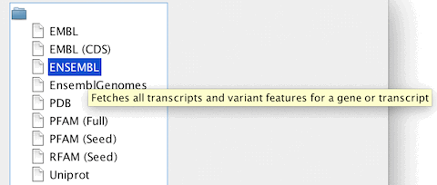

Sequence Fetcher
Jalview can retrieve sequences from certain databases using either
the DBFetch service provided by the EMBL European Bioinformatics
Institute, or, since Jalview 2.4, DAS servers capable of the sequence
command (configured in DAS settings).
The Sequence Fetcher can be opened via the "File"
menu on the main desktop in order to retrieve sequences as a new
alignment, or opened via the "File" menu of an existing
alignment to import additional sequences. There may be a short delay
when the sequence fetcher is first opened, whilst Jalview compiles
the list of available sequence datasources from the currently
defined DAS server registry.
Every time a new fetcher is opened, you will need to select
the database you want to retrieve sequences from the database
chooser.

The databases are shown as a tree, and ordered alphabetically;
tooltips are shown if you mouse over some sources, explaining what
the database will retrieve. You can select one by using the up/down
arrow keys and hitting return, or by double clicking with the mouse.
If you have DAS sources enabled, then you may have several
sources for the same type of sequence identifier, and these will
be grouped together in a sub-branch branch labeled with the
identifier.
Once you have selected a sequence database, its fetcher dialog
will open. Jalview provides two types of dialog:
- The Free-text Search Interface
Free-text
search clients are provided for PDB (Since 2.9), and UniProt
(Since 2.10). They provide access to each database's own query
system, enabling you to retrieve data by accession, free text
description, or any other type of supported field. For full
details, see each client's help page:
- Accession based sequence retrieval

To
retrieve sequences, simply enter one or more
accession ids (as a semi-colon separated list), or press the
"Example" button to paste the example accession for the
currently selected database into the retrieval box. Finally, press
"OK" to initiate the retrieval.
Only retrieving part of a sequence
When using DAS sources (indicated by a "(DAS)"),
you can append a range in addition to a sequence ID. For example, to
retrieve 50 residues starting at position 35 in UNIPROT sequence
P73137 using the UNIPROT DAS server, you would enter
"'P73137:35,84'.
Full support for DAS range
queries was introduced in Jalview 2.8
If you use the WSDBFetch sequence fetcher services (EMBL,
UniProt, PFAM, and RFAM) in work for publication, please cite:
Pillai S., Silventoinen V., Kallio K., Senger M., Sobhany S., Tate
J., Velankar S., Golovin A., Henrick K., Rice P., Stoehr P., Lopez
R.
SOAP-based services provided by the European
Bioinformatics Institute.
Nucleic Acids Res. 33(1):W25-W28
(2005)